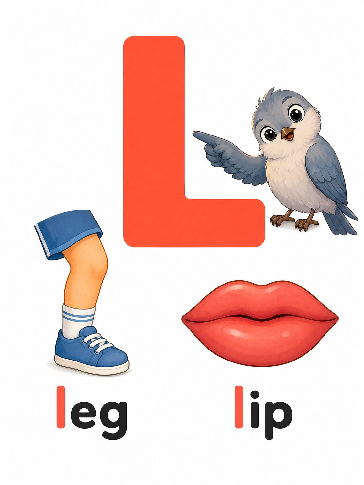
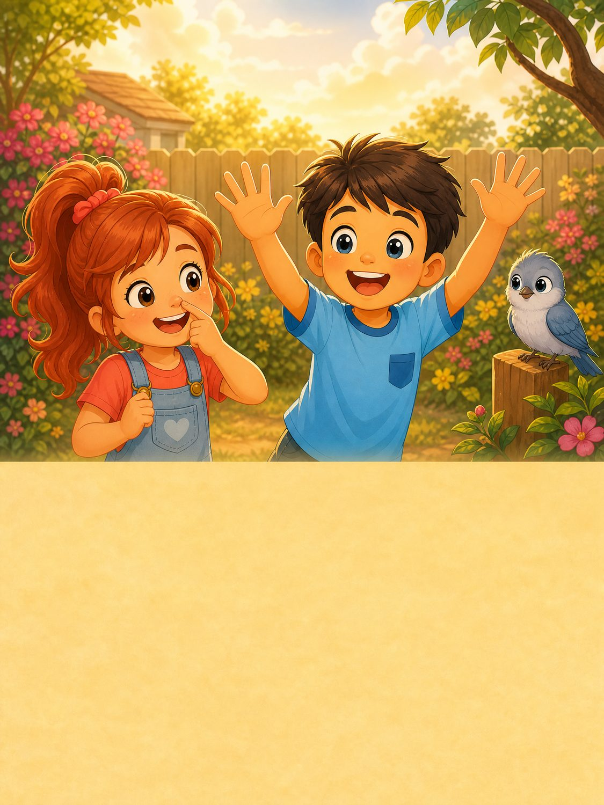

Outcome
Ask “What’s your name?” and answer with a name.
Learning experience and curriculum design for young English learners.
Bright Starts is a six-level English course for children. Unit 1 is designed for learners who may be new to English and still developing pencil control. Short cycles of listening, looking, speaking and movement give children more than one way to take part. Predictable routines, frequent retrieval and visual support help children move towards speaking, reading and writing. Australian English provides a consistent editorial and audio base while everyday classroom and play contexts remain broadly familiar.
I designed a structure of 10 units per level and eight lessons per unit. The Level 1 sequence moves from greetings, names and classroom routines towards cumulative word reading, spelling and supported writing. Unit 1 introduces numbers 1–5, four sound–letter correspondences and foundational tracing. Later units revisit language and letter sounds with increasing independence. First exposure to all 26 letters is planned by the end of Unit 6.
One outcome is carried through three working documents: the learner performs a name exchange; the Student Book models the language and gives rehearsal; the Teacher’s Book schedules practice and an exit prompt.
Ask “What’s your name?” and answer with a name.
Student Book pp. 10–11: listen, identify speakers, match dialogue, sequence pictures and rehearse in pairs.
Teacher listens to both roles in the exit exchange. Lesson 8 samples the exchange again and records the prompt needed.
Explore the full digital Unit 1 across the Student Book and Activity Book: 38 learner pages, all 215 numbered practice prompts, page-specific visuals, simple practice controls and all 18 audio-script previews.
Open the complete Unit 1 learner sample →Artwork is selected and placed to help children notice, match, listen, read or practise. The page viewer connects each image to its printed task and page context.


Review the eight-lesson learning sequence, a timed lesson traced to its Student Book dialogue, and a printable formative observation sheet with practical performance descriptors.
Open the Unit 1 evidence sheetUnit 1 introduces l, t, i, s. The early forms use short strokes, and s adds a controlled curve. The teacher draws attention to the visual difference between tall l and dotted i. The taught sounds let the teacher model blending and segmenting sit, a word children already understand from movement routines. Children may join as they’re ready. Unit 2 adds new correspondences and extends the word bank.
The 24-page Student Book, 14-page Activity Book, Teacher’s Book, assessment and 18 track scripts use the same lesson sequence. Scripts include General Australian English guidance, response pauses and story cues. Page-specific art direction stays with its Student Book page. Approved visuals guide recurring-character identity. AI assisted drafting, consolidation and cross-file review, with the curriculum package providing editorial controls. Pilot feedback will guide later revisions.